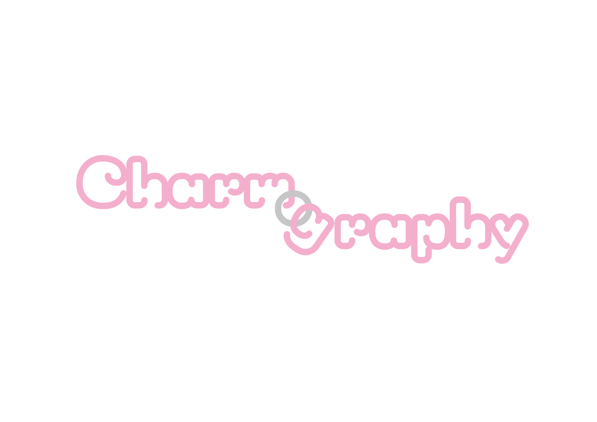

A LITTLE CONNECTION

Hold the o. Give it a little pull.
按住灰色圆环，拖开连接
The logo is connected. Drag the grey o, or focus it and press Enter, to release the letters.

The logo is connected. Drag the grey o, or focus it and press Enter, to release the letters.